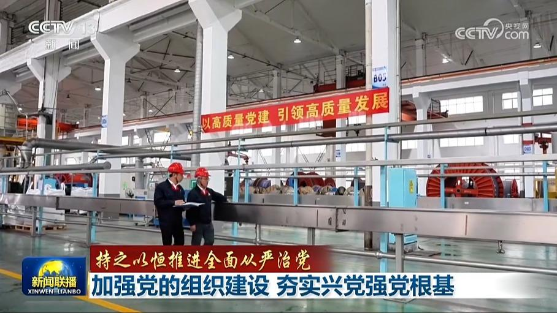
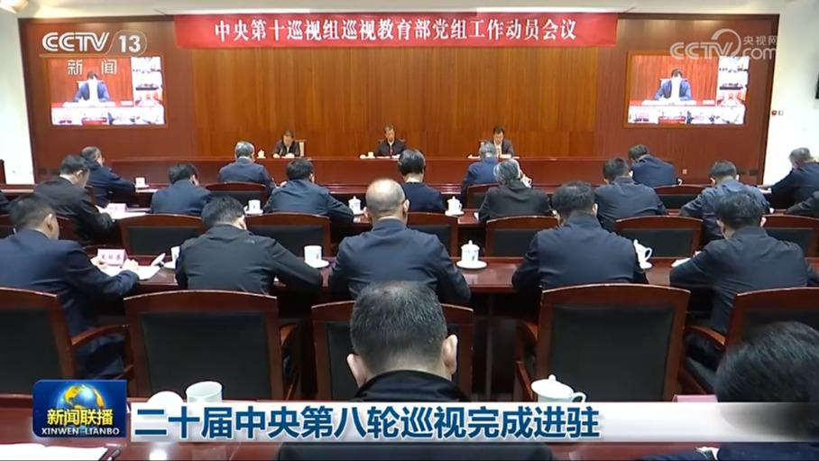
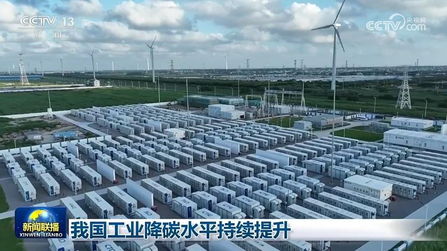
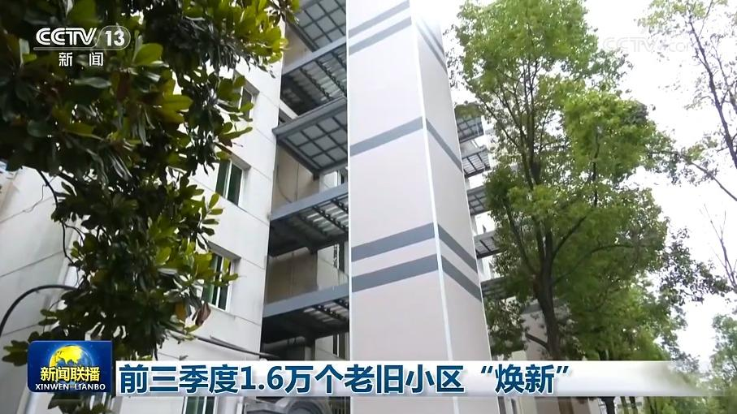
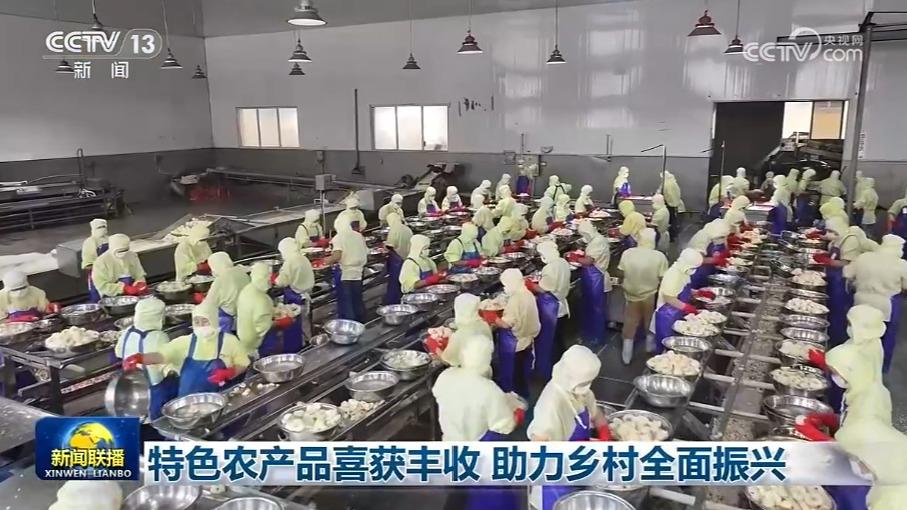
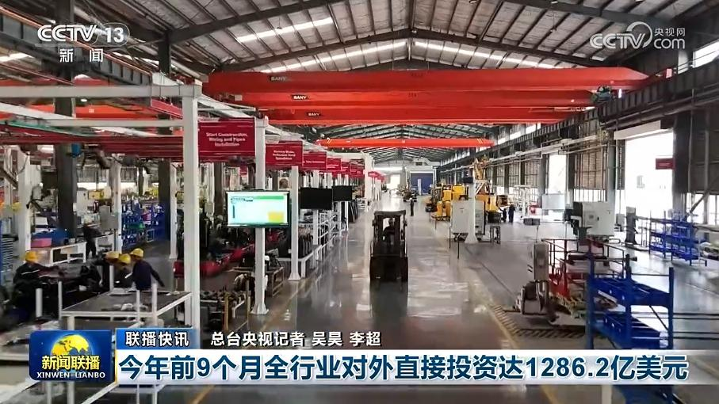
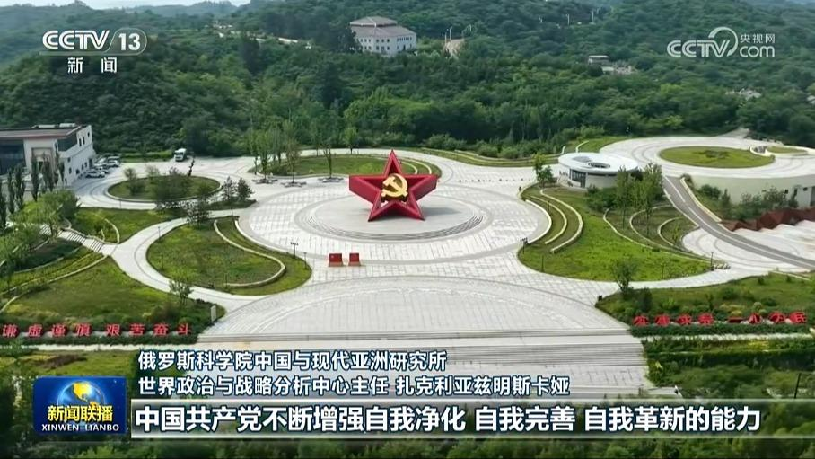
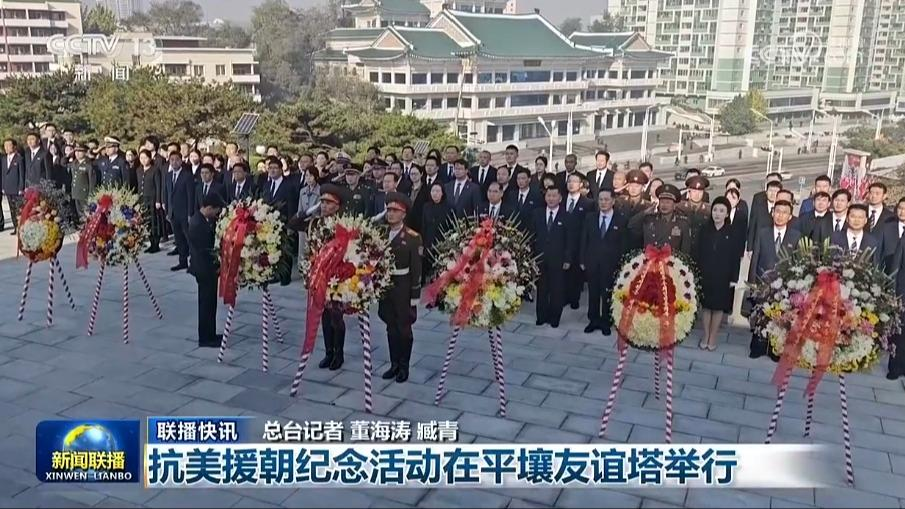

01

【持之以恒推进全面从严治党】加强党的组织建设 夯实兴党强党根基
党的力量来自组织，党的全面领导、党的全部工作要靠党的坚强组织体系去实现。党的十八大以来，以习近平同志为核心的党中央健全上下贯通、执行有力的严密组织体系，着力增强党组织政治功能和组织功能，把基层党组织建设成为有效实现党的领导的坚强战斗堡垒，为新征程上持之以恒推进全面从严治党，以中国式现代化全面推进中华民族伟大复兴提供坚强组织保证。


党的力量来自组织，党的全面领导、党的全部工作要靠党的坚强组织体系去实现。党的十八大以来，以习近平同志为核心的党中央健全上下贯通、执行有力的严密组织体系，着力增强党组织政治功能和组织功能，把基层党组织建设成为有效实现党的领导的坚强战斗堡垒，为新征程上持之以恒推进全面从严治党，以中国式现代化全面推进中华民族伟大复兴提供坚强组织保证。
党的十八大以来，以习近平同志为核心的党中央围绕建设什么样的长期执政的马克思主义政党、怎样建设长期执政的马克思主义政党的重大时代课题，提出一系列管党治党、兴党强党的新理念新思想新战略，形成了习近平党建思想，为深入推进新时代党的建设新的伟大工程提供了根本遵循和行动指南。深入学习贯彻习近平党建思想，具有重大政治意义、理论意义、实践意义、时代意义。……
国务院总理李强日前签署国务院令，公布《事业单位登记管理条例》（以下简称《条例》），自2026年12月1日起施行。《条例》共6章34条，主要内容：

根据党中央关于巡视工作的统一部署，近日，二十届中央第八轮巡视完成进驻工作。15个中央巡视组将对教育部和31所中管高校党组织开展常规巡视。
记者从交通运输部获悉，今年前三季度，交通运输经济运行总体平稳，主要指标保持增长。
长三角一体化发展上升为国家战略以来，区域外贸规模持续攀升。海关最新数据显示，长三角地区货物贸易进出口已经连续19个月保持增长，为全国外贸稳增长发挥重要支撑作用。

今年，我国启动国家级零碳工厂建设，一批工业领域降碳新技术加快落地，推动工业领域降碳水平持续提升。

记者今天（10月26日）从住房城乡建设部获悉，今年前三季度，全国累计完工改造城镇老旧小区1.6万个，更新管网、加装电梯等工作也加快推进，让老旧小区宜居度不断提升。

金秋时节，瓜果等特色农产品迎来丰收。多地利用规模化种植优势，做强品牌，扩大国内国际市场，助力农户增收致富、乡村全面振兴。

今年前9个月全行业对外直接投资达1286.2亿美元

国际人士高度关注中国共产党二十届五中全会。他们表示，五中全会聚焦持之以恒推进全面从严治党，这对确保中国共产党始终走在时代前列，始终赢得人民衷心拥护具有重要意义。

抗美援朝纪念活动在平壤友谊塔举行